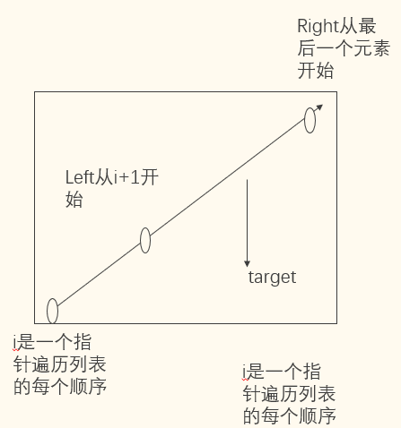
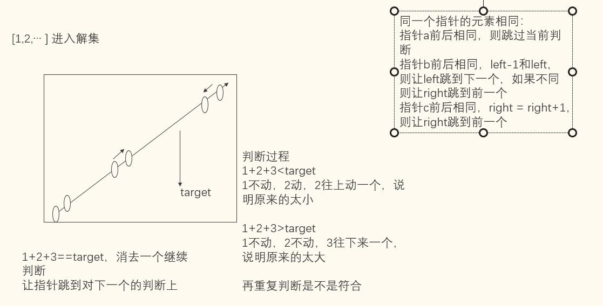

怎么消除重复的影响（因为有些值是重复的） –需要对每个指针各自前后的值进行比较 –指针a的判断，nums[a] == nums[a-1]: 跳过 –指针b的判断，nums[left-1] == nums[left]: left += 1，否则还是继续考虑当前位置 –指针c的判断，nums[right+1] == nums[right]: right -= 1

图1

图2
# inputnums = [-1,0,1,2,-1,-4]target =0# outputdef ThreeSums(list: nums, int: target): res = [] # 解的容器 nums.sort() # 先对数组进行排序for i inrange(len(nums)-1): # 指针a left = i+1# 指针b right =len(nums)-1# 指针cif nums[i] == nums[i-1]: #这是指针a自己的判断，判断前一个后一个是否相等continue# 跳过相同值得指针得计算while left < right: sums = nums[i] + nums[left] + nums[right]if sums == target and nums[right] != nums[left]: res.append( [nums[i], nums[left], nums[right]] ) # 符合的加入解集 left +=1# 接着往后计算# 其实去掉也行嘛# if nums[left] == nums[left - 1]: # 指针b得前后值相同# left += 1# right -= 1 # else# if nums[right] == nums[right + 1]:# right -= 1elif sums < target: left +=1else: right -=1return resprint(ThreeSums(nums, target))
[[-1, -1, 2], [-1, 0, 1]]
1.4.1 解析：假如本例中的5,5,10
pointer a = 5 pointer b = 5 pointer c = 10 他符合等于target的条件，加入res left += 1 pointer a = 5 pointer b = 6 pointer c = 9 (left != left-1，所以走right-=1的路，再判断此时的right+1和当前right是否相等，发现不等，则无需再让right-=1) 判断5,6,9依然符合条件 left += 1， left=9，right <9,循环结束
1.4.2 另外一个问题：消除二维数组的重复问题
# inputnums = [[1,2,3], [4,5,6], [4,5,6], [1,2,3]]# output: [[1,2,3], [4,5,6]]def eliminate(list: nums) ->list: di = {}for i, v inenumerate(nums): di[str(v)] = ireturn di.keys()def eliminate2(list: nums) ->list: res = []for i inrange(len(nums)):if nums[i] notin res: res.append(nums[i])return resprint(eliminate2(nums))
# inputnums = [-8, 2, 3, 5, 7]# output [1,4,9,25,49]def function1(nums): a =list(map(lambda x:x**2, nums)) a.sort()return adef function2(nums): res = [0for _ inrange(len(nums))] # 生成一个有值的数组，然后从数组的最右侧开始像最左侧赋值 left =0 right = k =len(nums)-1while left <= right:ifpow(nums[left], 2) >pow(nums[right], 2): res[k] =pow(nums[left], 2) k -=1 left +=1else: res[k] =pow(nums[right], 2) k -=1 right -=1return res# function3是反例，不能这样做def function3(nums): res = [0for _ inrange(len(nums))] k = left =0 right =len(nums)-1while left <= right:ifpow(nums[left],2) >pow(nums[right], 2): res[k] =pow(nums[right],2) k +=1 left +=1else: res[k] =pow(nums[left], 2) k +=1 right -=1return resprint(function1(nums))print(function2(nums))